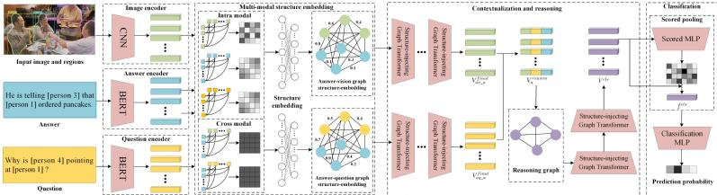
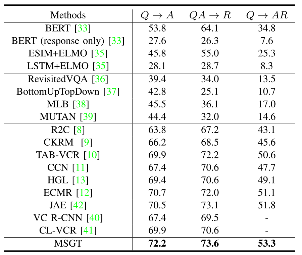
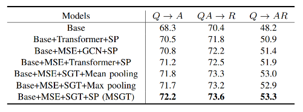
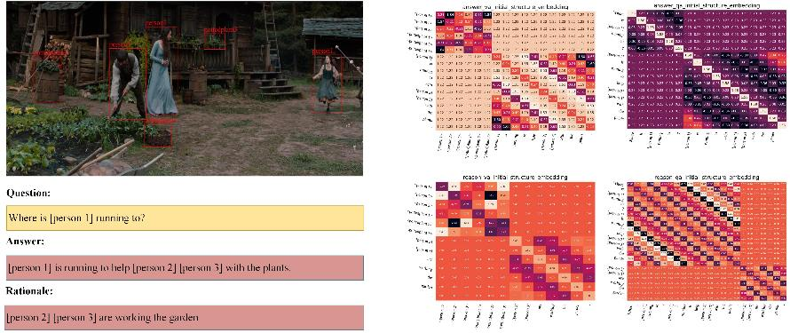
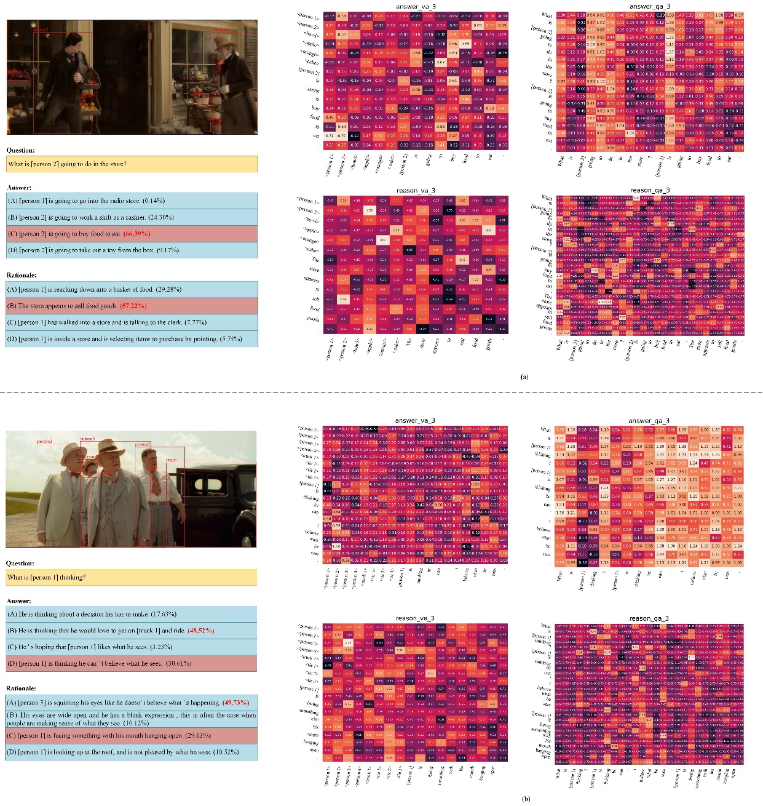

Multi-modal Structure-embedding Graph Transformer for Visual Commonsense Reasoning
Jian Zhu, Hanli Wang, Bin He
Overview:
Visual commonsense reasoning (VCR) is a challenging reasoning task that needs not only answer the question based on a given image but also provide a rationale justifying for the choice. Graph-based networks are appropriate to represent and extract the correlation between image and language for reasoning, where how to construct and learn graphs based on such multi-modal Euclidean data is a fundamental problem. Most existing graph-based methods view visual regions and linguistic words as identical graph nodes, ignoring inherent characteristics of multi-modal data. In addition, these approaches typically only have one graph-learning layer, and the performance declines as the model becomes deeper. To address these issues, a novel method named Multi-modal Structure-embedding Graph Transformer (MSGT) is proposed. Specifically, an answer-vision graph and an answer-question graph are constructed to represent and model intra-modal and inter-modal correlations in VCR simultaneously, where additional multi-modal structure representations are initialized and embedded according to visual region distances and linguistic word orders for more reasonable graph representation. Then, a structure-injecting graph transformer is designed to inject embedded structure priors into the semantic correlation matrix for the evolution of node features and structure representations, which can stack more layers to make model deeper and extract more powerful features with instructive priors. To adaptively fuse graph features, a scored pooling mechanism is further developed. Experiments demonstrate the superiority of the proposed MSGT framework compared with state-of-the-art methods on the VCR benchmark dataset.
Method:
The architecture of the proposed MSGT framework is illustrated in Fig. 1. The framework consists of three parts: multi-modal structure embedding (MSE) module, structure-injecting graph transformer (SGT) module for contextualization and reasoning, and scored pooling (SP) classification module. Specifically, the image regions, the question and the answer data are firstly fed into pre-trained networks to extract features. Then an answer-vision structure-embedding graph and an answer-question structure-embedding graph are constructed based on the initial features in the MSE module. The SGT module is further adopted to learn the evolution of the graph at both the contextualization and reasoning stages. Finally, the reasoning graph is represented as a vector via the proposed SP for classification.

Fig 1. The architecture of the proposed MSGT framework.
Results:
To evaluate the effectiveness of the proposed method, MSGT is compared with other state-of-the-art VCR frameworks on the benchmark dataset. The statistical results are shown in Table 1, and ablation study results for each module are given in Table 2. Moreover, an instance of multi-modal structure embedding achieved by the MSE module are provided in Fig 2. Instances of successful case and failure case obtained by the proposed MSGT are illustrated in Fig 3.
Table 1. Comparison of accuracy for three subtasks in VCR achieved by the competing methods on the validation set of VCR dataset.

Table 2. Ablation study on the validation set for three subtasks in VCR.


Fig 2. An instance of multi-modal structure embedding for the VCR task obtained by the proposed MSGT.

Fig 3. Instances of (a) successful case and (b) failure case for the VCR task obtained by the proposed MSGT.
Source Code:
原站插图：图片暂留白MSGT1.0.zip
Citation:
Please cite the following paper if you find this work useful:
Jian Zhu, Hanli Wang, and Bin He, Multi-modal Structure-embedding Graph Transformer for Visual Commonsense Reasoning, IEEE Transactions on Multimedia, vol. 26, pp. 1295-1305, Jan. 2024.